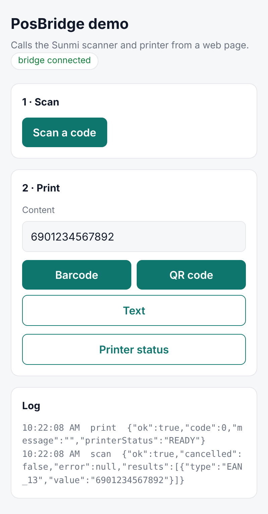
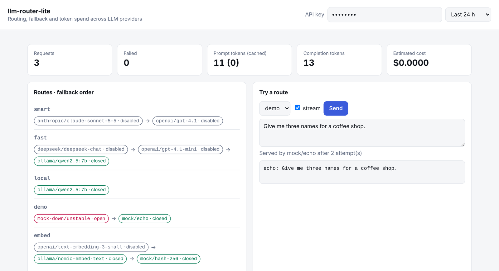
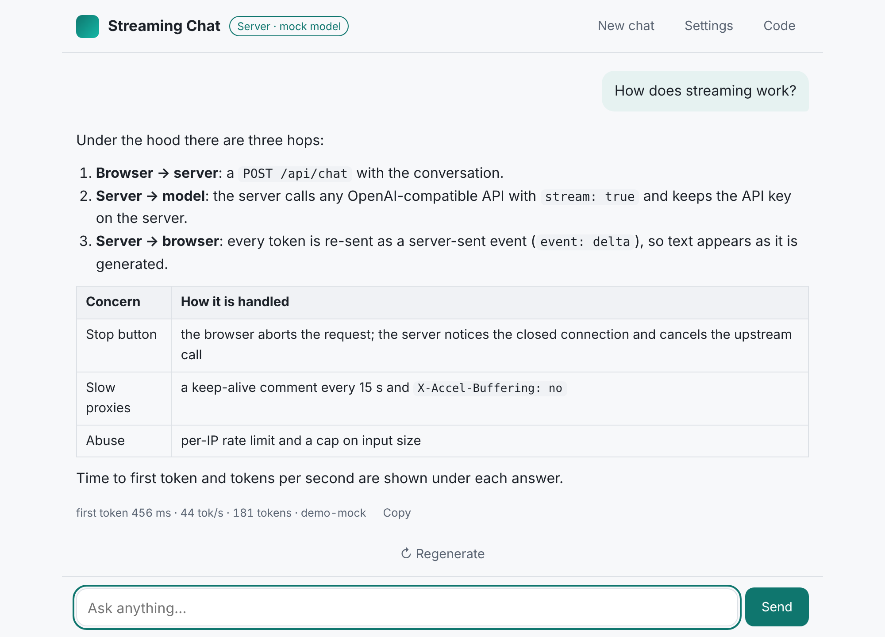
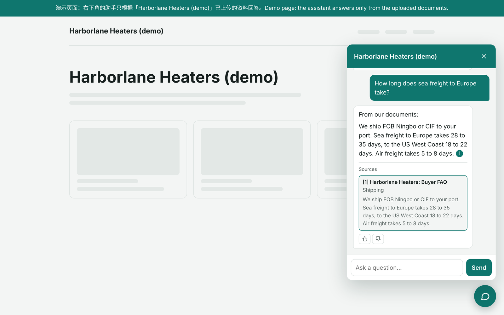

面向海外市场的 AI 语音陪伴 App
实时语音对话应用：用户开口说话，模型用语音回答，并记得之前聊过的内容。
- 云端与端侧两套语音识别。
- 流式语音合成，模型边生成边播报。
- 基于对话摘要的长期记忆，以及 App Store 和 Google Play 订阅。
我是 Han（Yihan Qiu），AI 全栈工程师。12 年来一直端到端地交付产品：Flutter 和 Android 应用、调用大模型的 Python 服务， 以及它们背后的小票打印机、扫码枪和 NFC 读卡器。其中多个产品上架了 App Store 和 Google Play，用在真实的门店和学校里。
12 年产品开发 福建厦门 · UTC+8 2026 年 11 月起可远程合作
公司和客户的项目不开源，这里只做文字介绍，并有意略去了名称。
实时语音对话应用：用户开口说话，模型用语音回答，并记得之前聊过的内容。
把 147 个页面、180 多个接口从原生 Android 迁移到一套同时支持 iOS 和 Android 的 Flutter 代码。
收银平板、后厨小票和叫号屏，服务餐饮门店。
学校用的 Android 考勤终端，配套 Vue 管理后台。
从零编写、归我所有的代码。开源仓库都带测试、CI 和中英文文档。
Android · Kotlin · 开源
一个 Android 应用：在商米收银终端上打开任意网页，网页通过一套简单的 JavaScript 接口就能调用终端自带的扫码头和小票打印机。

Python · 大模型网关 · 11 月开源
可自行部署的大模型网关：应用只对接一个 OpenAI 风格的接口，背后可以是 OpenAI、Claude、DeepSeek、Ollama 等。
2026 年 11 月 1 日起公开仓库

TypeScript · Node · SSE · 开源
回答逐字出现的聊天应用：小型 Node 服务器把任何兼容 OpenAI 接口的大模型以 SSE 转发给浏览器，15 KB 的前端把流式内容实时渲染成 Markdown，不依赖任何框架。

Python · RAG · 产品内测中
上传价目表、说明书和常见问题，在官网放一个聊天窗口，只依据这些资料回答，并标出出处。

Dart · Flutter · 开源
纯 Dart 编写的 ESC/POS 小票打印库：文字样式、中文、条码、二维码和图片，可走网络打印，也能接入任何自定义传输方式。
final receipt = Receipt(paper: Paper.mm58)
..text('港湾咖啡',
align: PosAlign.center, bold: true)
..row(['拿铁', '28.00'])
..row(['香蕉蛋糕', '18.00'])
..divider()
..row(['合计', '46.00'], bold: true)
..qr('https://example.com/r/1042')
..cut();
await NetworkPrinter('192.168.1.80').print(receipt);可远程全职，也可按项目报价合作。
对话、基于自有资料的问答、语音、邮件分拣，直接集成到你已有的应用里。
一套代码同时支持 iOS 和 Android，对接打印机、扫码枪和蓝牙设备。
让网页或 Android 应用用上商米终端、小票打印机、扫码枪、RFID 和 NFC 读卡器。